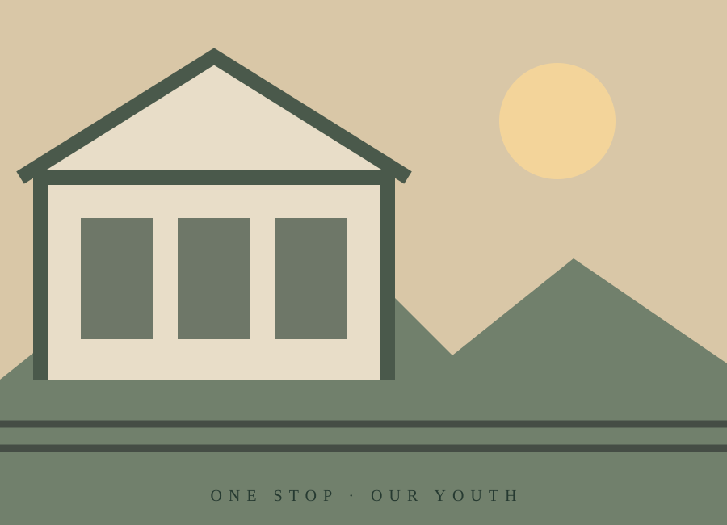
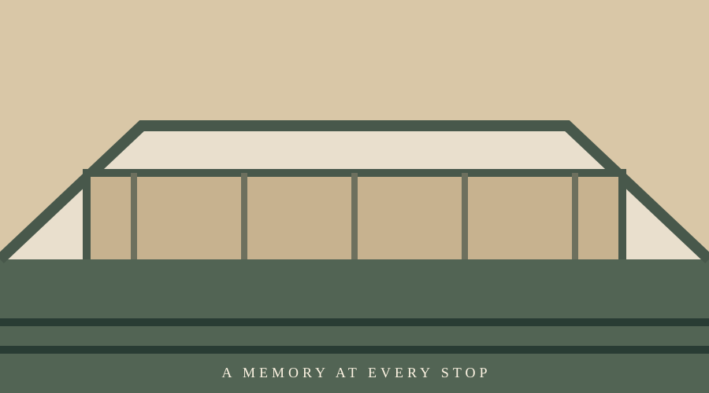

認識舊車站、月台與鐵道文化。
A PLACE · A MEMORY · A YOUTH
這一站，青春
有些車站記錄城市的來去，有些相遇，讓青春有了停靠的地方。
從一座老車站出發，走進鐵道歷史、特色空間與日常體驗，重新發現古蹟裡也能收藏青春。
認識這部作品 ↗
THE IDEA
讓古蹟，不只停留在歷史裡
臺中驛鐵道文化園區擁有百年鐵道記憶，也結合展覽、市集與多元活動。本專題以故事型短影音，讓年輕人看見古蹟不同於刻板印象的一面：它可以是散步、探索、拍照，也可以是與重要的人一起留下回憶的地方。
透過兩位女孩的相伴探索，將歷史場域融入日常體驗。
以吊飾作為情感信物，讓多年後的重逢再次連結青春。

THE MESSAGE
每一站，都可能成為青春的風景。
邀請你走進臺中驛，讓下一段回憶從這裡開始。